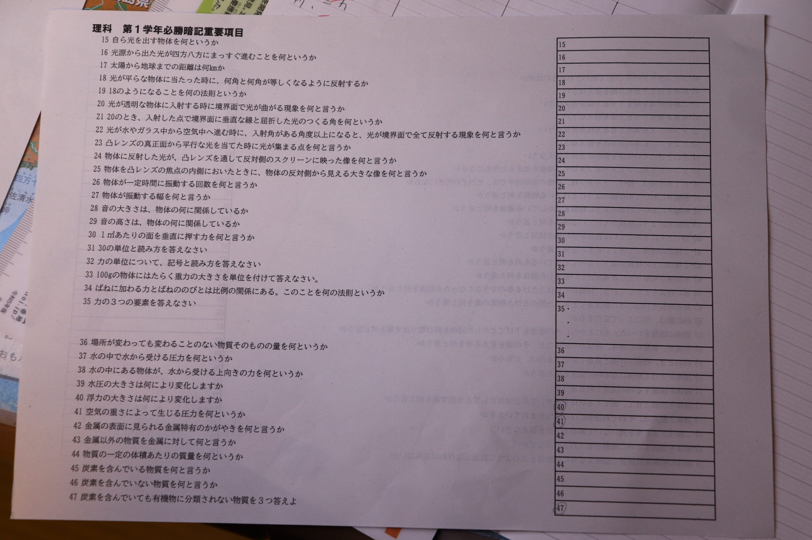
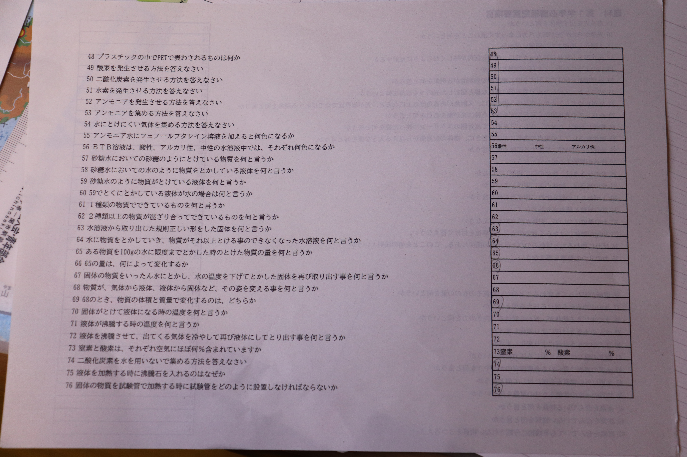
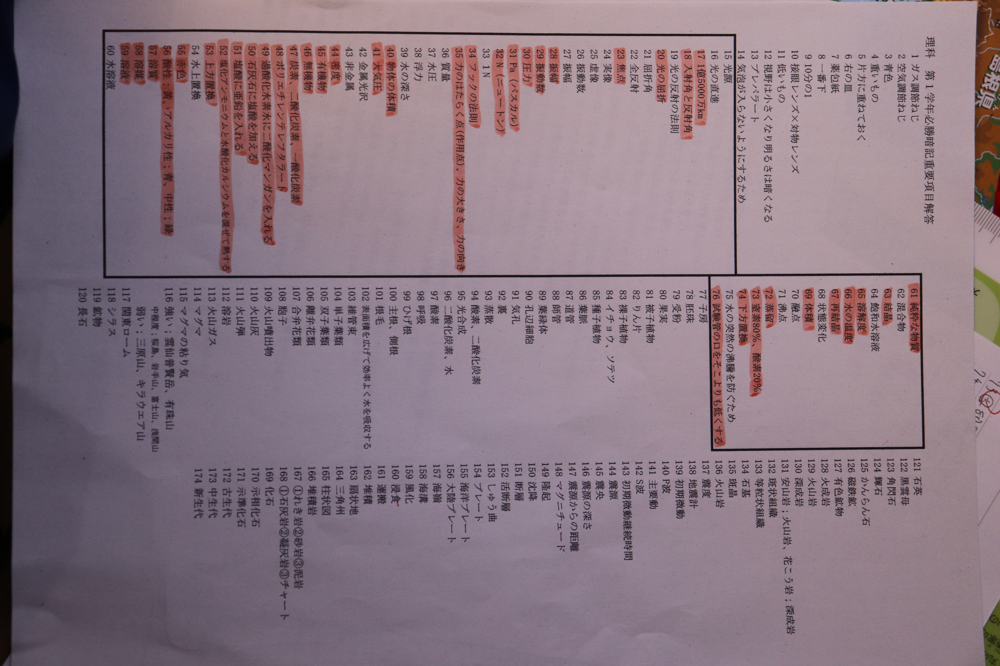

📚
受験対策クイズ
中学1〜3年・5教科。単元別、過去問題、弱点克服、そして9月号特別対策。
ユーザーネームを入力してね。
メールアドレスなどの登録は不要。名前だけで始められるよ。
STEP 1 / 5
教科を選択
問題1 / 10
詳しい解説を開く
RESULT
おつかれさま！
PAST
過去問題モード
「再現」はこのHTMLに登録した問題、「対策」はその月向けの練習問題。
8月号・再現問題
登録した8月号の再現問題に挑戦。
8月号・対策問題
8月号向けの対策問題。
9月号・再現問題
登録した9月号の再現問題に挑戦。
9月号・対策問題
9月号向けの対策問題。
SPECIAL
9月号特別対策
今日もらった理科プリントを使った特別対策。写真を見ながら重要項目を確認できるよ。

理科 第1学年必勝暗記重要項目（1ページ目）

理科 第1学年必勝暗記重要項目（2ページ目）

理科 第1学年必勝暗記重要項目・解答
特別対策クイズ
プリントの内容から作った確認問題。
RECORD